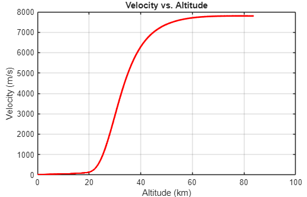
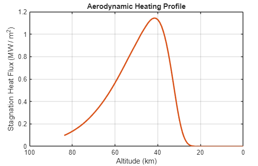
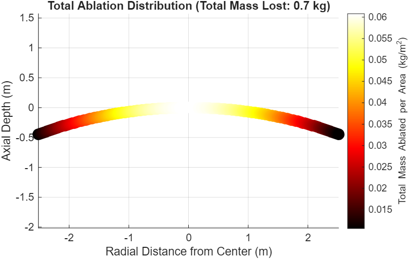

The challenge
Estimate where heating becomes most severe during descent and how much heat-shield material is consumed in a first-order model.
Approach
This two-week team project explored how a spacecraft’s changing speed and atmospheric environment shape re-entry heating. The model links a layered atmosphere and simplified ballistic descent with stagnation-point heating, a curved-surface heat-flux distribution, and a radiation-versus-ablation energy balance.
- Modeled temperature, pressure, and density from sea level to approximately 84.9 km, then stepped through a simplified constant-flight-path-angle descent.
- Used the Sutton–Graves correlation for stagnation-point heating and a cosine-based distribution to map heat flux across the curved shield.
- Divided the shield into 100 rings and integrated material loss from heat flux exceeding the assumed radiative limit.






Model output
The report predicts approximately 0.7 kg of total ablation for its assumed vehicle, trajectory, and material parameters. Its plots show heating concentrated near the shield center and a heating peak partway through descent, where the vehicle remains fast as atmospheric density increases.
Assumptions & limits
This is an educational, unvalidated first-order estimate. The final model uses a simplified surface energy balance and does not solve internal conduction, back-wall temperature, pyrolysis, or changing shield geometry.
- Constant flight-path angle, vehicle mass, drag coefficient, and material properties.
- Parameters compiled from multiple sources, rather than a validated reconstruction of one mission.
- Radiation and ablation represented with a simplified surface energy balance.